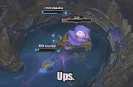

Lubie grać w gry. Najbardziej w League of Legends.
League of Legends (w skrócie LoL) – sieciowa gra komputerowa z gatunku multiplayer online battle arena.
Powstała na bazie modyfikacji Defense of the Ancients (DotA) do Warcraft III: The Frozen Throne.
Została wyprodukowana i wydana przez studio Riot Games. Została zapowiedziana 7 października 2008, a wydana 27 października 2009.

Gry są rozgrywane na mapie Summoner's Rift, która jest jedyną dostępny w grze na profesjonalnym poziomie.
Naprzeciwko siebie stają dwie pięcioosobowe drużyny, próbujące zniszczyć Nexus drużyny przeciwnej, po drodze pokonując stwory i struktury na liniach oraz potwory w dżungli.
